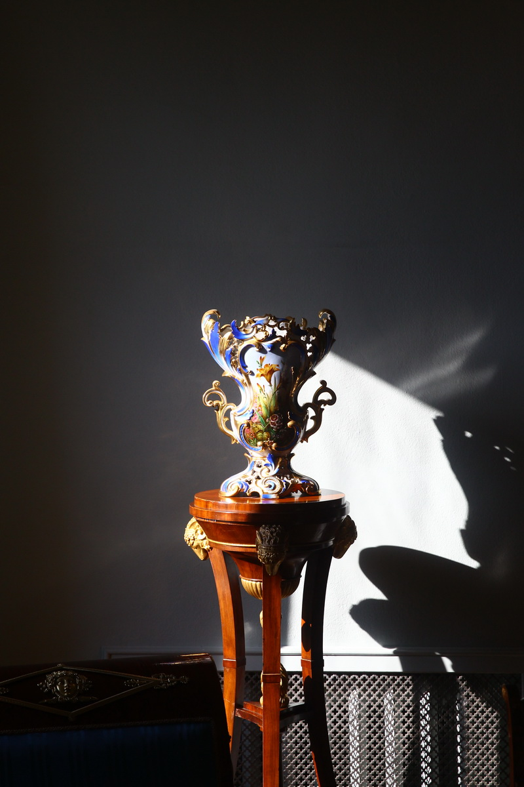
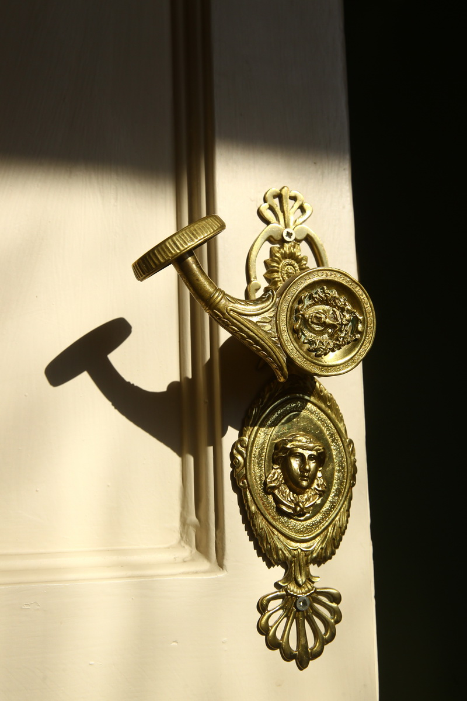

Купить билет
После революции, 25 сентября 1918 г., в Горки впервые приехал глава первого советского правительства
В.И. Ленин. В 1972 году Музей В.И. Ленина в Горках получил статус музея-заповедника.

Усадьба Горки – главный объект Государственного исторического музея-заповедника «Горки Ленинские».
Живописные окрестности, неповторимая архитектура и уникальная история усадьбы вызывают неподдельный
интерес у посетителей заповедника. В разное время Горками владели представители старинных дворянских
фамилий: Наумовы, Трубецкие, Белосельские, Бекетовы, Бутурлины, Дурасовы, Писаревы. Лопухины.
Формирование архитектурно-паркового ансамбля усадьбы относится к первой трети XIX в. Завершено
строительство Большого дома и двух флигелей было при Писареве Александре Александровиче – известном
политическом и общественном деятеле, участнике войны 1812 г. С конца 1870-х гг. XIX в. Горками
владели представители купеческих династий Сушкиных, Прокофьевых, Шибаевых, Герасимовых.

В 1909 г. имение приобрела вдова известного русского мецената, Саввы Тимофеевича Морозова, Зинаида
Григорьевна, к тому времени ставшая женой московского градоначальника Анатолия Анатольевича Рейнбот.
При З.Г. Морозовой-Рейнбот архитектурно-парковый ансамбль был реконструирован по последним
новшествам в области технического прогресса. Работы велись при участии известных архитекторов Ф.
Шехтеля, Ф. Кольбе, Н. Лазарева.